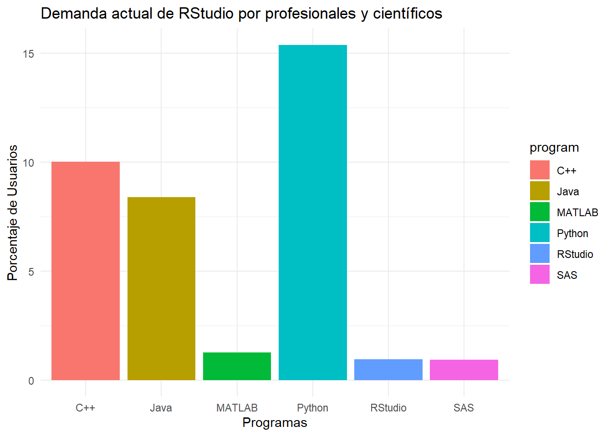

El software R es tanto un lenguaje de programación como un entorno computacional que facilita la realización de cálculos, simulaciones y el desarrollo de modelos estadísticos. También permite realizar una variedad de cálculos matemáticos y crear gráficos.
2 Historia y Creación
R fue creado por Ross Ihaka y Robert Gentleman en la Universidad de Auckland, Nueva Zelanda, aunque es el resultado de un esfuerzo colaborativo de muchas personas alrededor del mundo. R está disponible como Software Libre y funciona en múltiples versiones para Linux, Windows y MacOS. No es un solo programa, sino un conjunto integrado de herramientas para manipulación de datos, cálculos y visualización gráfica.
RStudio, también software libre, es un entorno de desarrollo integrado para R. Facilita el uso de R al proporcionar una interfaz más amigable y simplificar las tareas de programación para gráficos y cálculos estadísticos.
Existe una versión RStudio Desktop que es para usuarios que desean ejecutar el programa localmente y, otra versión denominada RStudio Server, que permite el acceso remoto a través de un navegador web y facilita el desarrollo colaborativo de grandes proyectos. Las dos versiones están disponibles para Windows, MacOS y Linux.
Actualmente, el desarrollo de RStudio esta a cargo del grupo llamado R Core Team. Además, existe fuentes de consulta para dudas específicas donde el usiario puede acceder y recibir la ayuda correspondiente en “mailing list” en la versión en inglés (http://www.r-project.org/mail.html) y portugués (http://leg.est.ufpr.br/doku.php/software:rbr)
3 Objetivo
RStudio fue creado para facilitar el uso de R, mejorara la productividad y eficiencia de los usuarios, ofreciendo herramientas integradas de edición de código, depuración y visualización.
4 Uso del software
En la actualidad, RStudio es una herramienta preferida por muchos profesionales y científicos.Aunque, el uso del software es poco en Ámerica del Sur, día a día es más requerido debido a sus características avanzadas y facilidad de uso. A continuación, se presenta un diagrama de barras que compara el uso actual de RStudio frente a otros programas (TIOBE: https://www.tiobe.com/tiobe-index/).
ver código
# Llamar librería library(ggplot2)library(dbplyr)# Llamar a datosdata <-data.frame(program =c("Python","C++","Java", "MATLAB", "RStudio","SAS"), porc =c(15.39, 10.03, 8.40, 1.26, 0.96, 0.92))# Crear gráficodata |>ggplot(aes(x = program, y = porc, fill = program)) +geom_bar(stat ="identity") +theme_minimal() +labs(title ="Demanda actual de RStudio por profesionales y científicos",x ="Programas",y ="Porcentaje de Usuarios")

5 Descarga e Instalación
Puedes descargar RStudio desde su sitio oficial que ofrece versiones para Windows, macOS y Linux (https://posit.co/downloads/). Clique en la caja “downland RStudio” para la versión de Windows para el sistema operativo de 32 o 64 bits.
6 Panorama General
RStudio ofrece un conjunto de características que lo hacen muy atractivo para los usuarios. Entre las caracteristica se destaca:
Editor de código (resaltado de sintaxis, autocompletado y soporte para múltiples lenguajes).
Consola de R (ejecuta código R directamente y muestra resultados de manera interactiva).
Panel de archivos y proyectos (Gestiona proyectos y archivos de manera eficiente).
Visualización y gráficos (Herramientas integradas para crear gráficos y visualizar datos).
Depuración (Herramientas avanzadas para depurar y optimizar código).